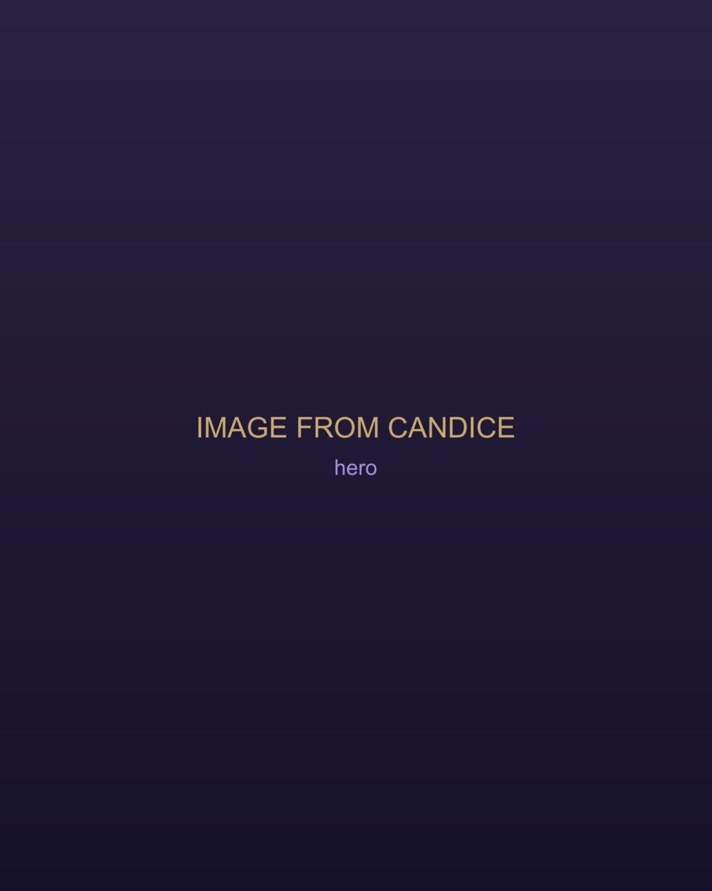
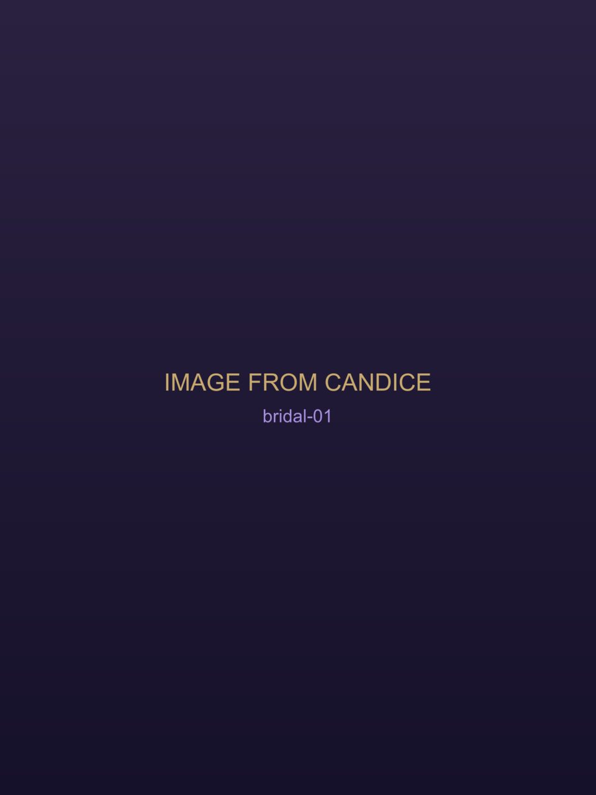
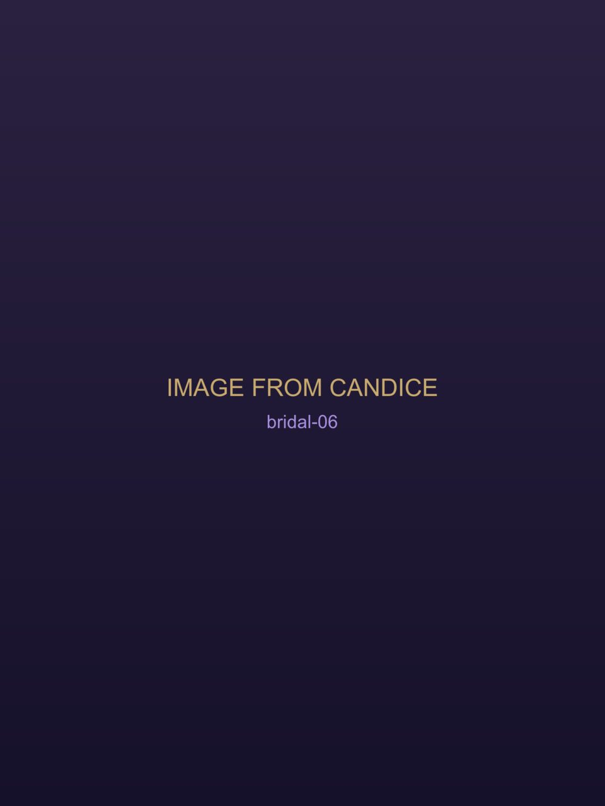
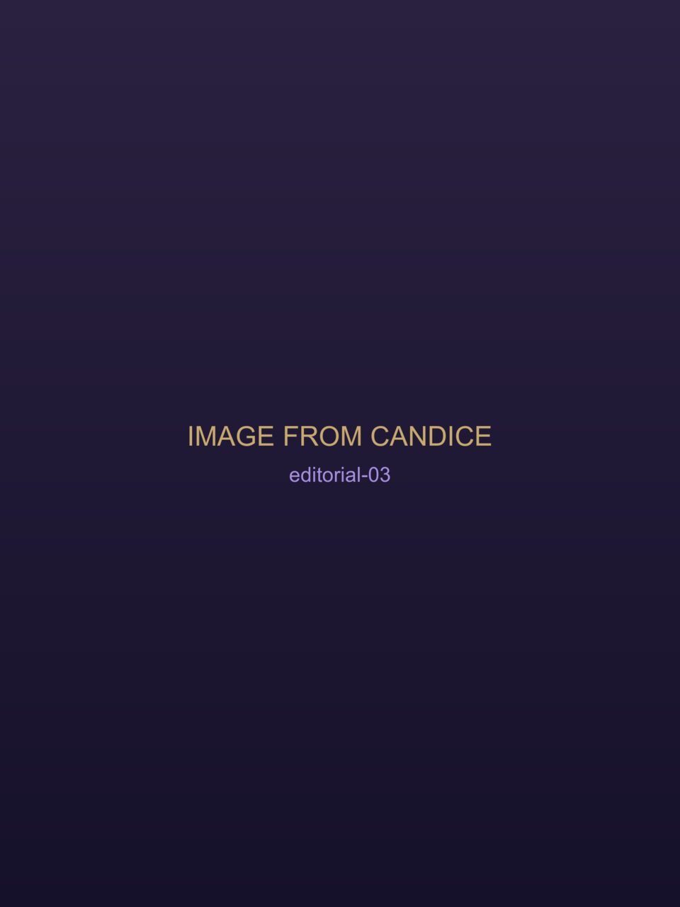
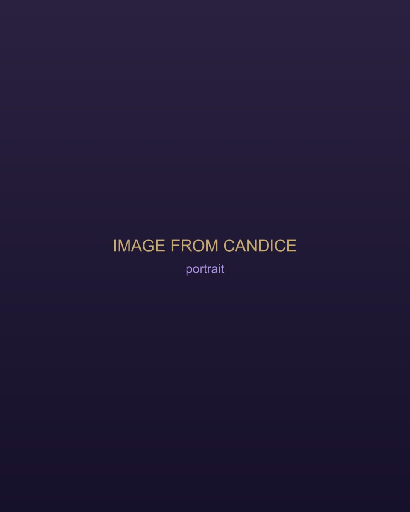

Candice Kuit
Hair & Makeup Artist · Cape Town
Soft glam bridal and editorial makeup. Skin first.
Your wedding day isn’t about becoming someone else.
Candice works skin-first. The skin is prepared until it is luminous, then definition goes only where it is needed: a little at the eyes, the brows, the lips. The aim is to enhance, not mask, so you still recognise yourself in the mirror and in the photographs years from now.
She is especially strong with mature skin, and every look is built to photograph well and to last from the first portrait to the last dance.




What’s included
- Bridal makeup
- Bridal hair Confirm she offers hair
- Trial session Confirm
- Bridal party hair and makeup Confirm
- Travel area Confirm travel area
On set for campaigns, fashion and beauty.
The same skin-first discipline, adjusted for camera, lighting and a production schedule. Commercial bookings go through One League Creative Management.
Only images Candice confirms she may use
![Editorial beauty makeup by Candice Kuit [CONFIRM: describe image]](images/editorial-01-960.jpg)
![Fashion editorial hair and makeup by Candice Kuit [CONFIRM: describe image]](images/editorial-02-960.jpg)

![Beauty campaign makeup by Candice Kuit [CONFIRM: describe image]](images/editorial-04-960.jpg)
Brands, productions and press.
Confirm full list with Candice
- Selected clients
- AdidasTimberlandSuperbalistUnileverKFCAce & TateGlamourCape Union MartEssieOrlebar BrownRussell & BromleyBrutal FruitHunza G
- Productions
- Egg FilmsCape Town ProductionsMoonlightingHacienda ProductionsFlamingo FilmsBaker & CoMR Films
- Film
- Diana (2013)Makeup assistant, Africa unit
- Featured in
- SA Weddings“Top 8 Makeup Artists in Cape Town”
- SA Weddings“Top Bridal Makeup Artists in the Western Cape”

Candice Kuit
Candice Kuit is a hair and makeup artist based in Cape Town. Through The Makeup Company she works with brides, with a skin-first approach to soft glam: luminous skin, delicate definition, and makeup that enhances rather than masks. She is known for her work with mature skin, and her bridal clients have included the wives of presidential candidates.
Alongside bridal, she works across editorial, television and film for brands including Adidas, Timberland, Unilever and Glamour, with production companies such as Egg Films and Moonlighting. She is represented for commercial work by One League Creative Management, and launched a makeup trade show Name / year.
She has worked with brides since 2008 Since 2008 or 20+ years, with more than 10,000 hours in the chair.
Tell her the date and the venue.
Brides
Message Candice directly on WhatsApp. The message opens ready to send: just add your date and venue.
WhatsApp Candice- WhatsApp +27 79 444 4257 OK to publish?
- Email Email address
Commercial
Represented by One League Creative Management, Cape Town.
One League profile- Email info@oneleague.co.za
- Phone +27 21 462 7607
- Web oneleague.co.za
- @themakeupcompanyy
- @tmc_brides · bridal